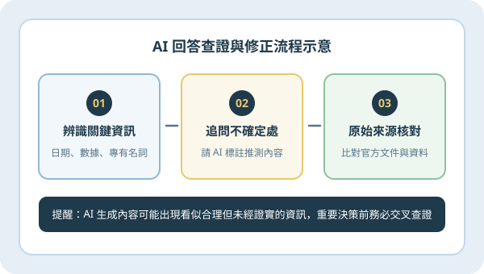
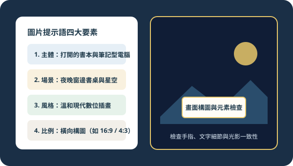

單元編號 A01・AI實戰應用狀態：已發布（示範內容）｜更新：2026-10-29
A01｜ChatGPT 提示語入門
剛開始接觸對話式 AI 時，若只輸入過於簡短的詞彙，往往只能得到籠統的回答。透過清楚描述任務背景、限制條件與期望格式，能大幅提升回覆的實用度。
核心操作重點
- 為什麼清楚描述任務很重要：明確指出「要解決什麼問題」與「內容給誰看」，避免 AI 自行猜測方向。
- 如何提供背景與限制：補充使用情境、字數範圍、語氣風格（例如：溫和易懂、避免未解釋的專業術語）。
- 如何指定回答格式：要求 AI 以「條列重點」、「步驟說明」或「對照表格」呈現，方便後續閱讀與整理。
- 逐步調整與追問：先取得初步草稿，再針對細節提出具體修改要求，不必一次追求完美指令。
✦ 簡單提示語範例（示範內容）「我想要撰寫一份給行政同事看的數位工具分享大綱。請用臺灣繁體中文，列出 3 個日常文書整理常見痛點與對應的 AI 協助方式，並以『條列式重點＋簡短說明』格式呈現，每點控制在 80 字以內。」
 圖 A01：提示語基礎結構示意（任務背景 ＋ 範圍限制 ＋ 指定輸出格式）
圖 A01：提示語基礎結構示意（任務背景 ＋ 範圍限制 ＋ 指定輸出格式）單元編號 A02・AI實戰應用狀態：已發布（示範內容）｜更新：2026-10-29
A02｜AI 回答查證與修正
生成式 AI 擅長整理語句與提供構想，但有時也會產生看似流暢卻與事實不符的內容。養成查證與修正的習慣，是安全運用 AI 工具的關鍵步驟。
核心操作重點
- 認識 AI 回答可能存在錯誤：AI 是根據語意機率生成文字，並非即時查閱所有官方資料庫。
- 辨認需要優先驗證的內容：凡涉及具體日期、統計數據、法規條文、專有名詞與歷史事實，都應列為必查項目。
- 要求 AI 說明不確定之處：在提示語中加入「若有不確定或缺乏依據的部分，請直接標註說明，不要自行推測」。
- 使用可靠資料交叉檢查：將 AI 整理的結論與原始文件、官方網站公告或權威來源逐一核對後再採用。
✦ 查證與修正提示語範例（示範內容）「請幫我整理以下文章的 4 個重點。請完全根據我提供的原文整理，不要加入原文沒有提到的數據；如果有語意模糊的地方，請在後方加上『（待確認原文）』標記。」

圖 A02：AI 回答查證流程（辨識關鍵資訊 → 追問不確定處 → 原始來源核對）單元編號 A03・AI實戰應用狀態：已發布（示範內容）｜更新：2026-10-29
A03｜AI 圖片生成入門
使用 AI 協助產生插畫或視覺配圖時，清楚描述畫面的結構元素，能讓產出結果更貼近文章主題與品牌調性。
核心操作重點
- 圖片提示語的基本元素：拆解為「畫面主體」、「背景場景」、「光影與色調」、「整體藝術風格」四個層次。
- 設定主體、場景、風格與比例：例如指定「打開的書本與筆電（主體）」、「夜晚窗邊與星空（場景）」、「溫和現代數位插畫（風格）」與「16:9 橫幅比例」。
- 具體描述畫面需求：使用明確的視覺形容詞（如：深藍色夜空、柔和暖白桌面、簡潔構圖），避免抽象口號。
- 生成結果的基本檢查：仔細檢視畫面中的手指結構、器物邊緣、文字是否變形亂碼，以及光影方向是否自然合理。
✦ 圖片生成描述與檢查提醒（示範內容）描述範例：「溫和現代數位插畫風格，書桌上放著打開的筆記本與筆記型電腦，窗外是深藍色夜空與金色星光，色調溫暖柔和，橫向 16:9 構圖。」提醒：AI 生成的示意圖不可宣稱為真實攝影或軟體真實截圖。

圖 A03：圖片提示語四大要素與生成後細節檢查重點